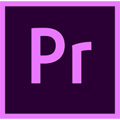

I'm JOSEPH Q.
Front-End Developer
I'm a Front-End Developer with 11 years of experience creating clean, responsive, and user-friendly designs. Turning ideas into sleek, functional web experiences is what I love to do, and I'm all about working with HTML, CSS, JavaScript, and frameworks like React. Collaboration is my jam—I enjoy teaming up with others to make projects better and more innovative. I’m always learning new things and challenging myself to grow, because for me, development isn’t just about the code; it’s about making a real impact through meaningful digital experiences.
Skills:
- HTML5
- CSS3
- jQuery
- Javascript
- NodeJS
- ReactJs
- WordPress
- Shopify
- Kentico
- Github
- MongoDB
- TailwindCSS
- Bootstrap
- ExpressJS
- Adobe Photoshop
- Adobe Premier




PORTFOLIO
Latest Projects

The PBC88 website is designed for a sports betting and online casino platform,
focusing heavily on user trust, accessibility, and onboarding. This was developed in
Wordpress with Divi Builder. I also implemented Lives Streaming page which connected
to a API, coded in JavaScript and PHP.
WordPress
HTML5
CSS3
JavaScript
jQuery
The PBC88 live is a livestreaming platform for sports such as Cricket, Football,
Basketball, Tennis and Esports. This was build in ReactJS as its client and
ExpressJS as its server side.
HTML5
CSS3
ReactJS
ExpressJS
MySql
A sleek, responsive website built with HTML, CSS3, SCSS and JavaScript. iPlay 818 is
a Chinese casino platform featuring sports, poker, live casino, lotto, slots, and
fishing games with interactive rewards.
HTML5
CSS3/SCSS
JavaScript
jQuery

HopeStar Technology Co., Ltd., established in 2016, is a leading provider of
comprehensive business solutions, specializing in API services and gaming platforms.
WordPress
HTML5
CSS3
The landing page is built to promote the Max Casino mobile gaming app, with a strong
focus on visual appeal, game features, and driving users to download the app via
Google Play or the App Store. The tone is fun, flashy, and energetic — typical of
casino-themed games.
HTML5
CSS3
JavaScript
jQuery
Bootstrap

This site was built from a purchased template, which we customized to align with my
client's branding. We prepared all assets and files, refining the code to ensure
easy backend implementation.
HTML5
CSS3
JavaScript
jQuery
Bootstrap

A landing page for iFinance, a lending investor corporation, with the goal of
creating a clean, modern, and conversion-focused interface that builds trust and
encourages user engagement.
HTML5
CSS3
JavaScript
jQuery
My Work Experience
Front-end Developer
Seven Seven Global Services, Inc.
Oct 2022 – Present | Pasig City
Key Responsibilities
- Creating landing pages using Kentico and Shopify.
- Integrate HTML templates and develop components in building a pages in the web applications
- Maintaining and updating client websites.
- Customized Shopify templates and sections using Liquid.
- Implement content management, application functionality, and integration requirements.
- Implementing accessibility and performance standards.
- Built a React.js web app with backend collaboration.
- Work within an agile development process, collaborating closely with the delivery team.
Senior Website Developer
National Strategic Group
Nov 2020 – Oct 2022 | Remote
Key Responsibilities
- Converted PSD designs to WordPress sites.
- Developed custom plugins and features.
- Optimized site performance using Page Insights.
- Experienced in Wordpress builders like DIVI, Elementor and WP Bakery.
- Worked closely with Design and SEO teams.
Front-end Developer
Cobalt 7 Designs Tech
Apr 2019 – Jul 2020 | Mandaluyong City
- Built slot games with JavaScript, PixiJS, TypeScript.
- Released 1–2 games/month, fully optimized.
- Handled performance and asset optimization.
Front-end Developer / Designer
YRB Solutions
Apr 2018 – Mar 2019 | Parañaque City
- Designed ads and graphics for marketing.
- Built landing pages and plugins.
- Created a game schedule page using AngularJS 1.
Jr. Back-end Developer / Web Designer
Falcontek Corp.
Mar 2015 – Mar 2018 | Makati City
- Built B2B backend using MVC + AngularJS 1.
- Integrated APIs and maintained client support.
- Designed web graphics and plugins.
Web Designer / Graphic Artist
Click 4 Corp
Feb 2014 – Jan 2015 | Remote
- Converted PSDs to responsive pages with Bootstrap.
- Created banners, logos, and invitations.
- Optimized sites using GTMetrix and PageSpeed.
System Administrator / Graphic Support
Qtech Business Solution, Inc.
Apr 2013 – Jan 2014 | Lucena City
- Supported Etracs and QASA systems.
- Designed brochures and ads.
- Developed QPOS interfaces and handled server connections.